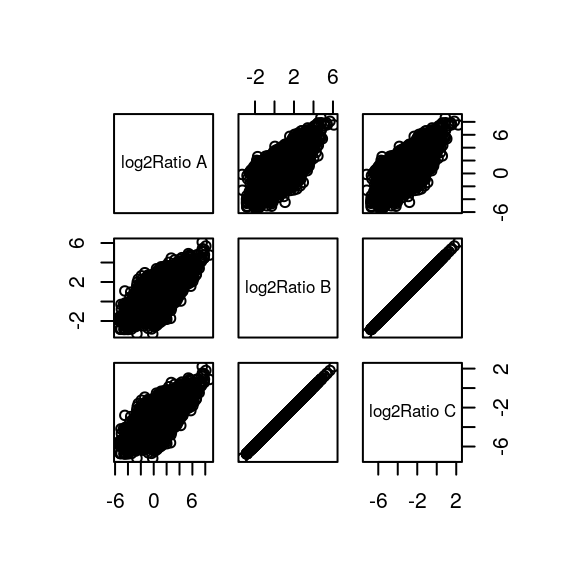

3 CLASE 3 - Exploración y transformación de estructuras de datos en R
library("tidyverse") # Muchas cosas cool
# Incluidas en tidyverse, en caso de errores cargandolo
library("dplyr") # Manipulación de datos mediante gramatica propia
library("magrittr") # Operadores cañeria (pipes) %>%)
library("readr") # Traducción (pharsing) de archivos a una tibble
library("stringr") # Operadores consistentes para stringsLa función mutate() de dplyr permite crear nuevas variables manteniendo las ya existentes. Por ejemplo, sacando el promedio de dos variables u operaciones similares.
# Importando datos de un CSV
data.location <- "https://raw.githubusercontent.com/DeepenData/clases/2bd7d93d9f23b2fe3fc679ca44e40a286f292ffe/06_mutate_pipes_regex/data_oct_08_2020.csv"
sim.without.outliers <- read_csv(data.location) # Importa la data a "sim.without.outliers"3.1 Utilizando mutate para manipulación de datos
3.1.1 Accediendo a datos tabulados
La gramatica de R utiliza [] y $ para acceder a objetos dentro de una estructura de datos.
Con un dataframe como el sacado de un CSV, esto son las filas, columnas, celdas individuales, etc.
Dado que un dataframe puede contener dataframes, este modo de acceso puede ir varios niveles de profundidad
.
sim.without.outliers$1saca la primera como vectorsim.without.outliers[1]saca la columna 1sim.without.outliers[ ,c(1,6)]saca las columnas 1 y 6sim.without.outliers[ ,c(1:6)]saca las columnas de 1 a 6sim.without.outliers[ ,-c(1,6)]saca todas las columnas menos la 1 y 6sim.without.outliers[c(10:110) ,c(2:6)]saca las filas 10 a 110 (100 en total) de las columnas 2 a 6sim.without.outliers[[1]]Sacamos la columna 1 como vector
# Accediendo a data en un objeto
sim.without.outliers[c(10:200), -c(1:2)] %>% rowMeans()
sim.without.outliers["treatment_1"] / sim.without.outliers["treatment_2"] %>% log2() -> hola
sim.without.outliers$nueva_columna <- hola # Llena la columna con "hola"
sim.without.outliers$nueva_columna <- NULL # Elimina una columnaPara trabajar con columnas en un dataframe, usamos dplyr::mutate(). Esto crea una nueva columna a partir de existentes, preservando las originales.
# Modificando la tabla con mutate() para calcular el Fold-change (log2/log2)
sim.without.outliers %>% # Tirando data por la cañeria
# Hace un promedio de las columnas TREAT(MENT)
mutate(`Mean treatment` = rowMeans(select(., starts_with("treat")))) %>%
# Hace un promedio de las columnas CONTROL
mutate(`Mean control` = rowMeans(select(., starts_with("control")))) %>%
# Calcula el fold-change de TRATAMIENTO sobre CONTROL
mutate(`log2Ratio` = log2(.[["Mean treatment"]] / .[["Mean control"]])) -> mutated.sim3.1.2 Funciones personalizadas
Creamos funciones para evitar escribir miles de lineas de codigo cada vez que queremos repetir algo. Podemos agruparlas y hacer una libreria para proyectos grandes, donde reutilizamos las funciones, o para recursiones.
Es importante considerar que las funciones son para cosas con un comportamiento predecible, e idealmente estable. Para analisis de datos, usualmente tenemos que limpiar los datasets, para tener una estructura “estándar” que nuestras funciones acepten, e idealmente definir un comportamiento de error para las funciones.
# Creamos funciones personalizadas para reutilizar codigo
# Aumenta por el cambio +- fracción del cambio. Es decir 3 +- 0.3 (2.7-3.3)
an.increase <- function(x, change = 3, fraction = .1) {
runif(1, min = (change * x - fraction * (change * x)), max = (change * x + fraction * (change * x)))
}
# Disminuye por el cambio +- fracción del cambio. Es decir 0.2 +- 0.1 (0.1-0.3)
a.decrease <- function(x, change = .2, fraction = .1) {
runif(1, min = (change * x - fraction * (change * x)), max = (change * x + fraction * (change * x)))
}Podemos crear una función para el pipeline más complejo que hicimos para el calculo del fold-change.
generate_mean_log2Ratio <- function(x, a.letter) {
x %>%
mutate(`Mean treatment` = rowMeans(select(., starts_with("treat")))) %>%
mutate(`Mean control` = rowMeans(select(., starts_with("control")))) %>%
mutate(log2Ratio = log2(.[["Mean treatment"]] / .[["Mean control"]])) %>%
# Les añadiremos un identidicador al final, por """motivos""" (ver luego)
rename_at(vars(matches("^treat|^contr|^mean|log2", ignore.case = TRUE)), funs(paste0(., a.letter)))
}# Generando sets para correlaciones
sim.without.outliers %>%
generate_mean_log2Ratio(" A") -> A # Calcula el fold-change inicial sin cambios
sim.without.outliers %>%
mutate(across(starts_with("treatment"), an.increase)) %>%
generate_mean_log2Ratio(" B") -> B # Fold-change aumenta 1.4-1.7 veces
sim.without.outliers %>%
mutate(across(starts_with("treatment"), a.decrease)) %>%
generate_mean_log2Ratio(" C") -> C # Fold-change disminuye -3.3 - -1.7 veces
# Creando el dataset final
cbind(
A, # Parte con la data A
select(B, matches("tre|con|log")), # Añade columnas de B
select(C, matches("tre|con|log"))
) -> final.data # Añade columnas de C y guarda## name ID treatment_1 A treatment_2 A treatment_3 A control_1 A control_2 A
## 1 bg_1 1 98769372 55528721 216372415 70057879 314970404
## 2 bg_2 2 21576971 15703117 49743142 3431646477 735515564
## 3 bg_3 3 574350430 1537885240 8727327947 254444555 11764283
## 4 bg_4 4 20926171 47644294 88937903 599913422 43731828
## 5 bg_5 5 164374922 728256656 68959572 495906095 1510632311
## control_3 A Mean treatment A Mean control A log2Ratio A treatment_1 B
## 1 4478205827 123556836 1621078037 -3.713707 322326623
## 2 24453279 29007743 1397205107 -5.589962 322326623
## 3 53031820 3613187872 106413553 5.085518 322326623
## 4 297274234 52502790 313639828 -2.578643 322326623
## 5 417270587 320530383 807936331 -1.333780 322326623
## treatment_2 B treatment_3 B control_1 B control_2 B control_3 B
## 1 151905053 649170201 70057879 314970404 4478205827
## 2 151905053 649170201 3431646477 735515564 24453279
## 3 151905053 649170201 254444555 11764283 53031820
## 4 151905053 649170201 599913422 43731828 297274234
## 5 151905053 649170201 495906095 1510632311 417270587
## Mean treatment B Mean control B log2Ratio B treatment_1 C treatment_2 C
## 1 374467292 1621078037 -2.1140419 19765556 11931499
## 2 374467292 1397205107 -1.8996322 19765556 11931499
## 3 374467292 106413553 1.8151578 19765556 11931499
## 4 374467292 313639828 0.2557309 19765556 11931499
## 5 374467292 807936331 -1.1094019 19765556 11931499
## treatment_3 C control_1 C control_2 C control_3 C Mean treatment C
## 1 44547260 70057879 314970404 4478205827 25414771
## 2 44547260 3431646477 735515564 24453279 25414771
## 3 44547260 254444555 11764283 53031820 25414771
## 4 44547260 599913422 43731828 297274234 25414771
## 5 44547260 495906095 1510632311 417270587 25414771
## Mean control C log2Ratio C
## 1 1621078037 -5.995142
## 2 1397205107 -5.780733
## 3 106413553 -2.065943
## 4 313639828 -3.625370
## 5 807936331 -4.9905023.2 Pipes complicadas
3.2.1 Tipos de Pipes
Las funciones de pipes vienen mejor definidas en magrittr.
R no incluye pipes en base.
%>%la pipe tradicional que conocemos y amamos; pasa un obejeto a la entrada de la función
%$%permite pasar adicionalmente los nombres del objeto
%<>%pipe bidireccional, que sirve para modificar el objeto de la entrada
%T%una tee, que permite sacar muestras del pipeline, o derivar a otros pipes
final.data %$% name %>%
head() # Sin head el output es de 3300 cosas## [1] "bg_1" "bg_2" "bg_3" "bg_4" "bg_5" "bg_6"final.data %$% cor(`log2Ratio A`, `log2Ratio B`) # Correlación entre A y B## [1] 0.7043315final.data %$% cbind(`log2Ratio A`, `log2Ratio B`, `log2Ratio C`) %>% colSums() -> my.col.sum
my.col.sum %>% subset(. > 0) -> my.col.sum
my.col.sum %<>% subset(. > 0) # Pipe bidireccional util para actualizar cosas
final.data %>% select(matches("log2")) %T>% plot() %>% # %T% permite sacar "muestras" del pipe
select(matches("B|C")) -> my.cols
3.2.2 Usando sistemas de identificadores
# Esto crea las descripciones del sistema o como estan descritas
# Molestias de los datos ómicos
my.terms <- c("system 1", "system 2.7.9", "subsystem A", "subsystem B and A") # Sistemas super-sistemicos
sample(my.terms, nrow(final.data) / 2, replace = T) -> terms.col # Genera una columna de terminos de 1650 lineas .
sample(final.data$name, nrow(final.data) / 2, replace = F) -> names.sample # saca 1650 nombres sin duplicados, para una tabla donde habran termiminos para sistemas de identificadores
data.frame(terms.col, names.sample) -> my.info # hacemos una tabla con datos de multiples funciones
inner_join(final.data, my.info, by = c("name" = "names.sample")) -> final.data.with.terms # elimina los datos que no tienen los terminos de sistemas que usamos
full_join(final.data, my.info, by = c("name" = "names.sample")) -> final.data.with.terms.nas # terminos en que algunos tienen descriptores y otros no3.2.3 Filtrado de filas
final.data.with.terms.nas %>% # Nuestra data media sucia sin los nombres sistemicos
filter(`log2Ratio A` < 0 & `log2Ratio B` < 0 & `log2Ratio C` < 0) %>% # TODO: porque no funciona con "?
drop_na() # Elimina todas las filas con NA
# CHUNK SIN OUTPUT3.3 Expresiones regulares
Las expresiones regulares, regex, son (generalizadamente) patrones de texto que definen un criterio de busqeda en un string.
Por ejemplo, a... se referiria a cualquier string que sea “a” seguido por tres caracteres, como “aaaa,” “a123,” “a,” etc.
Diversos lenguajes usan distintas gramaticas de regex, pero en general usan los mismos comodines y expresiones base.
R incluye paquetes base que usan regex, pero stringr tiene funciones más detalladas.
Sitios como regex101 permiten testear y analizar expresiones regulares.
# Detectando un patron
final.data.with.terms.nas %>%
.[["name"]] %>%
str_detect("DE") %>% # Detecta si hay o no, tira un vectro booleano
which() # Tira una lista de las columnas donde es str_detect es TRUE
# TODO: que hacia any()?final.data.with.terms.nas %>%
.[["name"]] %>%
str_detect("DE") %>%
any()## [1] TRUEfinal.data.with.terms.nas %>%
.[["name"]] %>%
str_extract("DE.\\d+") %>%
.[!is.na(.)]
# CHUNK SIN OUTPUT# Detección de patrones algo más avanzada
final.data.with.terms.nas %>%
.[["name"]] %>%
str_extract("[aA-zZ]E.1\\d$") %>%
.[!is.na(.)]## [1] "DE_10" "DE_11" "DE_12" "DE_13" "DE_14" "DE_15" "DE_16" "DE_17" "DE_18"
## [10] "DE_19"final.data.with.terms.nas %>%
.[["name"]] %>%
str_extract("[aA-zZ]E.1\\d+") %>%
.[!is.na(.)]## [1] "DE_10" "DE_11" "DE_12" "DE_13" "DE_14" "DE_15" "DE_16" "DE_17"
## [9] "DE_18" "DE_19" "DE_100" "DE_101" "DE_102" "DE_103" "DE_104" "DE_105"
## [17] "DE_106" "DE_107" "DE_108" "DE_109" "DE_110" "DE_111" "DE_112" "DE_113"
## [25] "DE_114" "DE_115" "DE_116" "DE_117" "DE_118" "DE_119" "DE_120" "DE_121"
## [33] "DE_122" "DE_123" "DE_124" "DE_125" "DE_126" "DE_127" "DE_128" "DE_129"
## [41] "DE_130" "DE_131" "DE_132" "DE_133" "DE_134" "DE_135" "DE_136" "DE_137"
## [49] "DE_138" "DE_139" "DE_140" "DE_141" "DE_142" "DE_143" "DE_144" "DE_145"
## [57] "DE_146" "DE_147" "DE_148" "DE_149" "DE_150" "DE_151" "DE_152" "DE_153"
## [65] "DE_154" "DE_155" "DE_156" "DE_157" "DE_158" "DE_159" "DE_160" "DE_161"
## [73] "DE_162" "DE_163" "DE_164" "DE_165" "DE_166" "DE_167" "DE_168" "DE_169"
## [81] "DE_170" "DE_171" "DE_172" "DE_173" "DE_174" "DE_175" "DE_176" "DE_177"
## [89] "DE_178" "DE_179" "DE_180" "DE_181" "DE_182" "DE_183" "DE_184" "DE_185"
## [97] "DE_186" "DE_187" "DE_188" "DE_189" "DE_190" "DE_191" "DE_192" "DE_193"
## [105] "DE_194" "DE_195" "DE_196" "DE_197" "DE_198" "DE_199"final.data.with.terms.nas %>%
.[["name"]] %>%
str_extract("[aA-zZ]E.1\\d.+") %>%
.[!is.na(.)]
# CHUNK SIN OUTPUTfinal.data.with.terms.nas %>%
.[["terms.col"]] %>%
str_extract("^s.*m") %>%
na.exclude() %>% # Es como lo de arriba, pero tira más cosas. Puede ser incomodo
sample(10) %>%
unique()
# CHUNK SIN OUTPUT# Reemplazo de patrones (subsystem -> comparment) # TODO: compartment?
final.data.with.terms.nas %>%
.[["terms.col"]] %>%
str_replace("subsyst.*", "comparment") %>%
na.exclude() %>%
sample(10)## [1] "comparment" "system 2.7.9" "comparment" "system 1" "system 1"
## [6] "system 1" "comparment" "comparment" "comparment" "comparment"3.4 Workflow de la vida real
final.data.with.terms.nas %>%
filter(str_detect(
name, # en la columna "name"
regex("de.*", # Busca "de*"
ignore_case = T
)
) & # sin diferencias Minuscula/Mayuscula
str_detect(
terms.col, # Busca en la columna "term.cols"
regex("B.*A", ignore_case = F)
)) # ...terminos que empiezan con B y terminan en A
# CHUNK SIN OUTPUTfinal.data.with.terms.nas %>%
filter(str_detect(
name, # en la columna "name"
regex("de.*", # ... el patrón "de*"
ignore_case = T
)
) & # sin diferencias Minuscula/Mayuscula
str_detect(
terms.col, # en la columna "term.cols"
regex("\\d.\\d", # ... el patrón "\\d.\\d"
ignore_case = F
)
) & # sin diferencias Minuscula/Mayuscula
`log2Ratio C` < 0) %>% # Y el fold-change es menor a 0
select(matches("log|name|term"))## name log2Ratio A log2Ratio B log2Ratio C terms.col
## 1 DE_1 2.88619266 1.72149304 -2.1596075 system 2.7.9
## 2 DE_9 5.67917488 2.88518017 -0.9959204 system 2.7.9
## 3 DE_11 3.10021441 0.06300006 -3.8181005 system 2.7.9
## 4 DE_13 0.82255832 -1.56341118 -5.4445117 system 2.7.9
## 5 DE_22 -0.76625024 -1.66740167 -5.5485022 system 2.7.9
## 6 DE_25 1.96060606 -1.01985391 -4.9009545 system 2.7.9
## 7 DE_36 2.74968692 0.07204354 -3.8090570 system 2.7.9
## 8 DE_53 -0.58330148 -1.64651798 -5.5276185 system 2.7.9
## 9 DE_56 4.23552845 2.90516862 -0.9759319 system 2.7.9
## 10 DE_60 2.73800563 1.63308990 -2.2480107 system 2.7.9
## 11 DE_64 2.47002415 -0.04970850 -3.9308091 system 2.7.9
## 12 DE_67 5.58416167 3.54621148 -0.3348891 system 2.7.9
## 13 DE_75 -0.11981155 -2.20549736 -6.0865979 system 2.7.9
## 14 DE_81 1.17481419 0.75492764 -3.1261729 system 2.7.9
## 15 DE_89 0.02689662 -0.49411439 -4.3752149 system 2.7.9
## 16 DE_91 1.96585394 -1.62345146 -5.5045520 system 2.7.9
## 17 DE_97 3.80597760 1.42927704 -2.4518235 system 2.7.9
## 18 DE_98 4.41874115 1.56208028 -2.3190203 system 2.7.9
## 19 DE_125 5.51197271 2.70544709 -1.1756535 system 2.7.9
## 20 DE_127 4.76132191 2.22996237 -1.6511382 system 2.7.9
## 21 DE_129 4.75642719 2.58463855 -1.2964620 system 2.7.9
## 22 DE_131 4.70996518 1.91561721 -1.9654833 system 2.7.9
## 23 DE_142 4.84611277 2.47381906 -1.4072815 system 2.7.9
## 24 DE_148 4.98743782 3.11872663 -0.7623739 system 2.7.9
## 25 DE_152 4.61256373 1.81066607 -2.0704345 system 2.7.9
## 26 DE_162 4.30961154 3.53035247 -0.3507481 system 2.7.9
## 27 DE_181 4.50450193 1.75608264 -2.1250179 system 2.7.9
## 28 DE_191 2.01897497 1.95532209 -1.9257785 system 2.7.9
## 29 DE_210 1.96482442 1.98761723 -1.8934833 system 2.7.9
## 30 DE_215 1.57229716 1.17189052 -2.7092100 system 2.7.9
## 31 DE_218 4.54997067 2.70319279 -1.1779078 system 2.7.9
## 32 DE_228 6.03492708 3.60861795 -0.2724826 system 2.7.9
## 33 DE_230 3.05837416 1.28174575 -2.5993548 system 2.7.9
## 34 DE_232 4.27065106 1.72458820 -2.1565124 system 2.7.9
## 35 DE_234 3.90509509 3.39649548 -0.4846051 system 2.7.9
## 36 DE_239 2.74954208 -0.68467005 -4.5657706 system 2.7.9
## 37 DE_243 6.61981075 2.82114359 -1.0599570 system 2.7.9
## 38 DE_255 0.00565650 -1.68945866 -5.5705592 system 2.7.9
## 39 DE_277 3.36321062 1.09113550 -2.7899650 system 2.7.9
## 40 DE_288 4.98204788 2.66509747 -1.2160031 system 2.7.9
## 41 DE_290 2.71675834 1.80294964 -2.0781509 system 2.7.9%in%permite detectar si un elemento esta en un objeto. Devuelve TRUE/FALSE.
Puede usarse como un complemento de los comparadores==,>,<=en sentenciasif(){}
if (T) {"ok"}## [1] "ok"if (F) {"ok"}
if ("system 2.7.9" %in% final.data.with.terms.nas$terms.col) {"ok"}## [1] "ok"# "system 2.7.9" está en "final.data..." así que TRUE -> 'ok'
final.data.with.terms.nas %>%
{
if ("system 2.7.9" %in% final.data.with.terms.nas$terms.col) print("ok") else str_extract(.[["terms.col"]], "system.*")
} %>%
na.omit() %>%
unique() -> unicos## [1] "ok"mis.datos <- list(final.data.with.terms.nas, unicos, c(1, 2, 4, 5, 5, NA))3.5 Ejemplo de vida real
library(tidyverse)
library(magrittr)
#fba <- read.csv('clase_3_datos.csv')
fba <- read_csv('https://raw.githubusercontent.com/DeepenData/clases/944d24e71390c75ab16c9a00a941ce6f3de1369d/03-mutate-pipes-regex/clase_3_datos.csv')## Warning: Missing column names filled in: 'X1' [1]##
## ── Column specification ────────────────────────────────────────────────────────
## cols(
## X1 = col_double(),
## ID = col_character(),
## Name = col_character(),
## Reaction = col_character(),
## Flux = col_double(),
## Sensitivity = col_double()
## )fba %<>% select(c('ID', matches('flux'), contains('Reac'),matches('*ame.*|sen'))) %>% filter(!str_detect(ID, regex('DM|sink', ignore_case = T))) %>%
mutate(`Node type` = ifelse(str_detect(Reaction, regex('\\[[a-z]A\\]', ignore_case = T)), 'Astrocyte', NA)) %>%
mutate(`Node type` = ifelse(str_detect(Reaction, regex('\\[[a-z]N\\]', ignore_case = T)), 'Neuron', `Node type`)) %>%
filter(Flux > 0.1 & abs(Sensitivity) > 0) %>% column_to_rownames("ID")
fba## Flux
## ENO 7.0380
## GAPD 7.0380
## GLCt1r 3.5190
## GLNS 4.2228
## HEX1 3.5190
## PFK 3.5190
## PYK 7.0380
## BTNt4i_Int 2.1114
## GLUt6_Int 4.2228
## NaKt_Int 2.8152
## ASPGLUm_Neuron 10.8026
## CSm_Neuron 10.8026
## CYOOm2_Neuron 32.4078
## CYOR-u10m_Neuron 64.8156
## ENO_Neuron 3.7646
## FUMm_Neuron 10.8026
## GAPD_Neuron 3.7646
## GLUNm_Neuron 4.2228
## HEX1_Neuron 1.8823
## HMGCOASim_Neuron 10.8026
## ICDHyrm_Neuron 10.8026
## L-LACt2r_Neuron 7.0380
## LDH_L_Neuron 7.0380
## MDHm_Neuron 21.6052
## NH4t3r_Neuron 4.2228
## PFK_Neuron 1.8823
## PGI_Neuron 1.8823
## PIt2m_Neuron 151.2364
## PYRt2m_Neuron 10.8026
## SUCD1m_Neuron 10.8026
## GLNtN1_Neuron 4.2228
## NaEX_Neuron 346.7718
## GLCt1r_Neuron 1.8823
## Reaction
## ENO 2pg[cA] <=> h2o[cA] + pep[cA]
## GAPD g3p[cA] + nad[cA] + pi[cA] <=> 13dpg[cA] + h[cA] + nadh[cA]
## GLCt1r glc-D[e] --> glc-D[cA]
## GLNS atp[cA] + glu-L[cA] + nh4[cA] --> adp[cA] + gln-L[cA] + h[cA] + pi[cA]
## HEX1 atp[cA] + glc-D[cA] --> adp[cA] + g6p[cA] + h[cA]
## PFK atp[cA] + f6p[cA] --> adp[cA] + fdp[cA] + h[cA]
## PYK adp[cA] + h[cA] + pep[cA] --> atp[cA] + pyr[cA]
## BTNt4i_Int btn[I] + h[cA] --> btn[cA] + h[I]
## GLUt6_Int glu-L[I] + h[I] + k[cA] + 3.0 na1[I] --> glu-L[cA] + h[cA] + k[I] + 3.0 na1[cA]
## NaKt_Int atp[cA] + h2o[cA] + 2.0 k[I] + 3.0 na1[cA] --> adp[cA] + h[cA] + 2.0 k[cA] + 3.0 na1[I] + pi[cA]
## ASPGLUm_Neuron asp-L[mN] + glu-L[cN] + h[cN] --> asp-L[cN] + glu-L[mN] + h[mN]
## CSm_Neuron accoa[mN] + h2o[mN] + oaa[mN] --> cit[mN] + coa[mN] + h[mN]
## CYOOm2_Neuron 4.0 focytC[mN] + 8.0 h[mN] + o2[mN] --> 4.0 ficytC[mN] + 2.0 h2o[mN] + 4.0 h[cN]
## CYOR-u10m_Neuron 2.0 ficytC[mN] + 2.0 h[mN] + q10h2[mN] --> 2.0 focytC[mN] + 4.0 h[cN] + q10[mN]
## ENO_Neuron 2pg[cN] <=> h2o[cN] + pep[cN]
## FUMm_Neuron fum[mN] + h2o[mN] <=> mal-L[mN]
## GAPD_Neuron g3p[cN] + nad[cN] + pi[cN] <=> 13dpg[cN] + h[cN] + nadh[cN]
## GLUNm_Neuron gln-L[mN] + h2o[mN] --> glu-L[mN] + nh4[mN]
## HEX1_Neuron atp[cN] + glc-D[cN] --> adp[cN] + g6p[cN] + h[cN]
## HMGCOASim_Neuron aacoa[mN] + accoa[mN] + h2o[mN] --> coa[mN] + h[mN] + hmgcoa[mN]
## ICDHyrm_Neuron icit[mN] + nadp[mN] <=> akg[mN] + co2[mN] + nadph[mN]
## L-LACt2r_Neuron h[I] + lac-L[I] --> h[cN] + lac-L[cN]
## LDH_L_Neuron lac-L[cN] + nad[cN] --> h[cN] + nadh[cN] + pyr[cN]
## MDHm_Neuron mal-L[mN] + nad[mN] <=> h[mN] + nadh[mN] + oaa[mN]
## NH4t3r_Neuron h[I] + nh4[cN] <=> h[cN] + nh4[I]
## PFK_Neuron atp[cN] + f6p[cN] --> adp[cN] + fdp[cN] + h[cN]
## PGI_Neuron g6p[cN] <=> f6p[cN]
## PIt2m_Neuron h[cN] + pi[cN] <=> h[mN] + pi[mN]
## PYRt2m_Neuron h[cN] + pyr[cN] <=> h[mN] + pyr[mN]
## SUCD1m_Neuron fad[mN] + succ[mN] <=> fadh2[mN] + fum[mN]
## GLNtN1_Neuron gln-L[I] + h[cN] + na1[I] <=> gln-L[cN] + h[I] + na1[cN]
## NaEX_Neuron na1[e] <=> na1[cN]
## GLCt1r_Neuron glc-D[e] --> glc-D[cN]
## Name
## ENO enolase Astrocyte
## GAPD glyceraldehyde-3-phosphate dehydrogenase Astrocyte
## GLCt1r glucose transport (uniport) Astrocyte
## GLNS glutamine synthetase Astrocyte
## HEX1 hexokinase (D-glucose:ATP) Astrocyte
## PFK phosphofructokinase Astrocyte
## PYK pyruvate kinase Astrocyte
## BTNt4i_Int Biotin uptake (antiport) Interstitial And Synapse
## GLUt6_Int Glutamate transport via Na, H symport and K antiport Interstitial And Synapse
## NaKt_Int Na+/K+ exchanging ATPase Interstitial And Synapse
## ASPGLUm_Neuron aspartate-glutamate mitochondrial shuttle Neuron
## CSm_Neuron citrate synthase Neuron
## CYOOm2_Neuron cytochrome c oxidase, mitochondrial Complex IV Neuron
## CYOR-u10m_Neuron ubiquinol-6 cytochrome c reductase, Complex III Neuron
## ENO_Neuron enolase Neuron
## FUMm_Neuron fumarase, mitochondrial Neuron
## GAPD_Neuron glyceraldehyde-3-phosphate dehydrogenase Neuron
## GLUNm_Neuron glutaminase (mitochondrial) Neuron
## HEX1_Neuron hexokinase (D-glucose:ATP) Neuron
## HMGCOASim_Neuron Hydroxymethylglutaryl CoA synthase (ir) Neuron
## ICDHyrm_Neuron Isocitrate dehydrogenase (NADP+) Neuron
## L-LACt2r_Neuron L-lactate reversible transport via proton symport Neuron
## LDH_L_Neuron L-lactate dehydrogenase Neuron
## MDHm_Neuron malate dehydrogenase, mitochondrial Neuron
## NH4t3r_Neuron ammonia transport via proton antiport Neuron
## PFK_Neuron phosphofructokinase Neuron
## PGI_Neuron glucose-6-phosphate isomerase Neuron
## PIt2m_Neuron phosphate transporter, mitochondrial Neuron
## PYRt2m_Neuron pyruvate mitochondrial transport via proton symport Neuron
## SUCD1m_Neuron succinate dehydrogenase Neuron
## GLNtN1_Neuron Glutamine transporter Neuron
## NaEX_Neuron Sodium transport (added for simulation)
## GLCt1r_Neuron Glucose transporter_Neuron
## Sensitivity Node type
## ENO 9.020562e-16 Astrocyte
## GAPD 1.110223e-15 Astrocyte
## GLCt1r 6.652000e+01 Astrocyte
## GLNS 1.332268e-15 Astrocyte
## HEX1 -1.998401e-15 Astrocyte
## PFK -1.998401e-15 Astrocyte
## PYK 2.153833e-14 Astrocyte
## BTNt4i_Int 3.328007e-31 Astrocyte
## GLUt6_Int -3.328007e-31 Astrocyte
## NaKt_Int 2.220446e-16 Astrocyte
## ASPGLUm_Neuron 2.109424e-15 Neuron
## CSm_Neuron -1.165734e-15 Neuron
## CYOOm2_Neuron -4.884981e-15 Neuron
## CYOR-u10m_Neuron -1.776357e-15 Neuron
## ENO_Neuron 8.881784e-16 Neuron
## FUMm_Neuron -8.881784e-16 Neuron
## GAPD_Neuron -1.054712e-15 Neuron
## GLUNm_Neuron 8.881784e-16 Neuron
## HEX1_Neuron 1.776357e-15 Neuron
## HMGCOASim_Neuron 2.386980e-15 Neuron
## ICDHyrm_Neuron 8.881784e-16 Neuron
## L-LACt2r_Neuron 3.328007e-31 Neuron
## LDH_L_Neuron -6.106227e-16 Neuron
## MDHm_Neuron -2.775558e-16 Neuron
## NH4t3r_Neuron 1.776357e-15 Neuron
## PFK_Neuron 1.776357e-15 Neuron
## PGI_Neuron -2.842171e-14 Neuron
## PIt2m_Neuron -5.551115e-17 Neuron
## PYRt2m_Neuron 3.330669e-16 Neuron
## SUCD1m_Neuron -6.661338e-16 Neuron
## GLNtN1_Neuron -2.664535e-15 Neuron
## NaEX_Neuron 2.812565e-15 Neuron
## GLCt1r_Neuron 6.000000e+01 Neuron